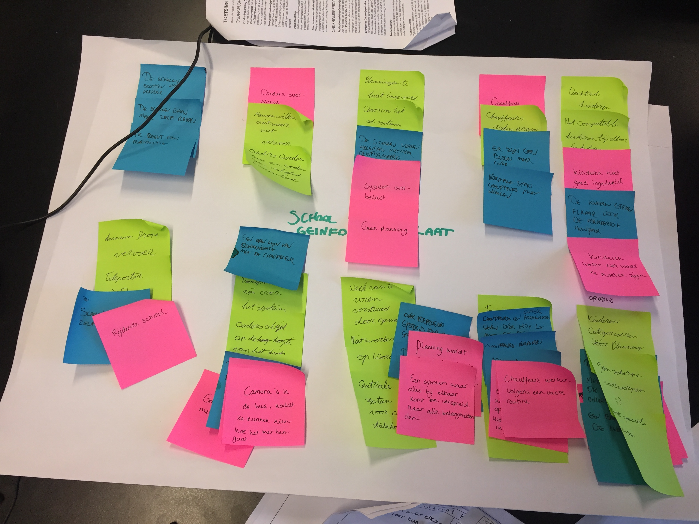

My first goal was to understand the perception of the Taxi’s. What did people think about it? What were the main problems? A big difficulty was getting to the target democratic. I’ve managed to do this in two ways. The first one was undercover desk research. For this I did some undercover research. On Facebook there were groups specifically for these type of Taxi’s. By analyzing many of the conversations I’ve found interesting things.
With this information I wanted to dive deeper. Thus I’ve made a small stakeholder map. Based on this stakeholder map I’ve tried to see how I’d be able to reach these parents. I’ve tried hospitals, several psychologist, organisations and schools. Eventually I got a response from a cluster 4 school. Who I could interview about the current situation. Later in the project we could also show our project to them. Because of this I’ve also managed to get my hands on the exact time schedule of the Taxi’s, which made sure we could talk to the taxi drivers.

1: The drivers are just normal taxi drivers. They’re unaware of what neurodevelopmental disorders mean. Because of this they don’t understand why these children behave how they do. This creates a lot of friction
2: The school is the one who puts the children together in groups. There are two type of children. Children with external and internal disorders. These two types can not be placed together, because they’re much more likely to create conflict.
3: The first week of school is most chaotic. This is because the school will get the lists of the taxi children the first school day. They are the last stakeholder that knows who will be in the taxis. This influences the behavior of the kids. Sudden changes increase the likelihood of bad behaviour.
4:There’s little insight in what happens in the cabs. When there’s a conflict between child and driver, they don’t give much insight in what exactly happened. There’s often a lack of communication between driver and teacher, since the drivers don’t understand the type of children they’re driving, they often feel like they’re in the right. Thus don’t wish to discuss.